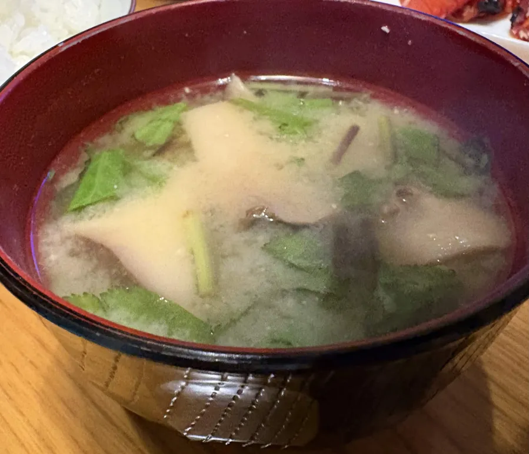
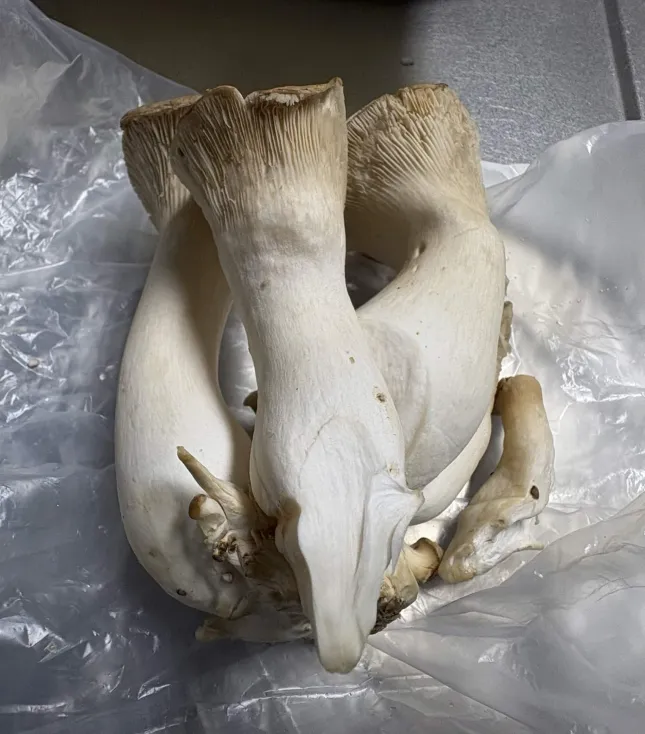
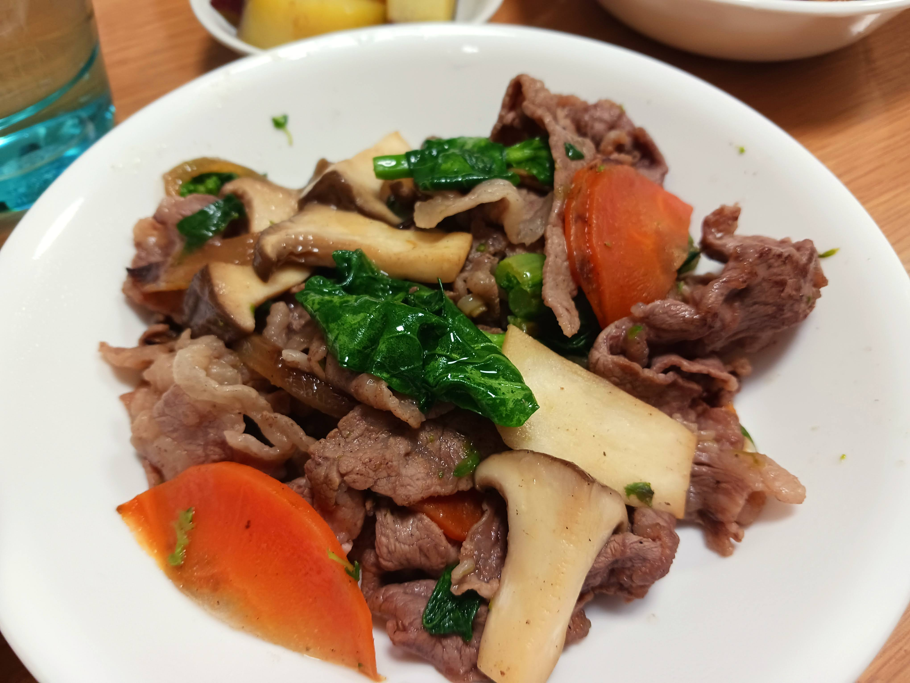

活動実績
2026.11.05
エリンギ豆知識① ～エリンギの旬～
皆さん初めまして！エリンギ資本党広報担当です！
これから不定期ではありますが、エリンギに関する豆知識や魅力などを発信していきたいと思います。
さて、みなさんはエリンギに"旬"があることをご存じでしょうか？
実はエリンギの旬は9月～12月。その中でも特に最盛期とされるのが10月から11月なんです！
しかし、エリンギはスーパーで一年中見かける食材ですよね？
これは、流通しているエリンギのすべてが人工栽培されているためです。
季節を問わず楽しめる一方で、秋が特に美味しいエリンギ。
スーパーなどで見かけたらぜひ手に取ってみてください！

2026.04.06
三つ葉との邂逅
エリンギを入れて作った味噌汁にお庭の三つ葉を添えました。三つ葉の香りがエリンギの風味をより際立たせる一品です。

2026.04.02
【速報】冷蔵庫の奥からエリンギを発見
冷蔵庫を捜索したところ、エリンギを発見しました。（※画像提供：支援者様）

2026.01.30
エリンギと牛肉と人参とスティックセニョールの塩コショウ炒め
エリンギを牛肉、人参、スティックセニョールと一緒に塩コショウでシンプルに炒めました。